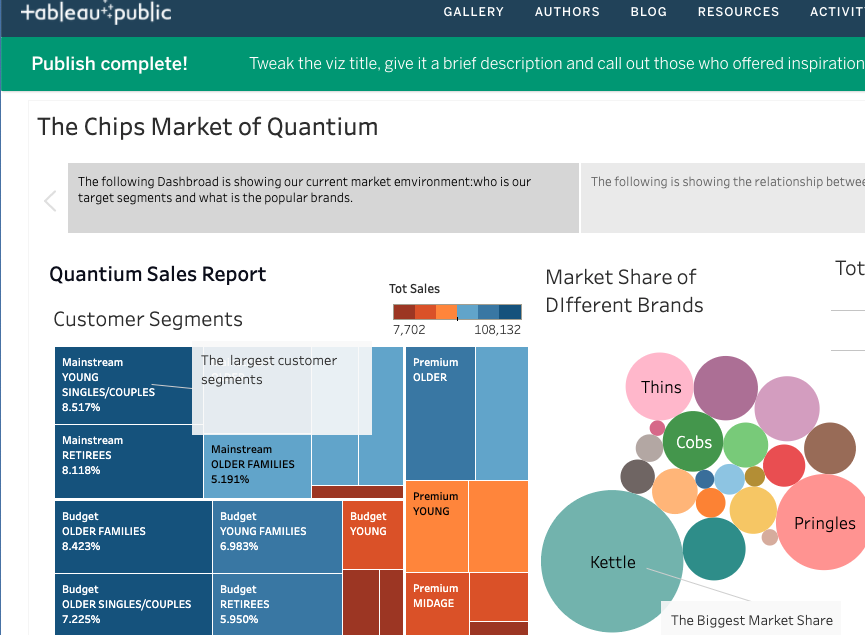

Data Visualisation of Quantium's Chips Sales
This story is inspired by the project of data preparation of Quantium.
In the previous preject, I had analysed the raw data and now I will explain the story of the data with tableau.
Background

In the Customer Segments,the total sales of different customer segments are coloured with deep blue to brown depends one the amount of sales. Therefore, from the treemap, we observed mainstream - young singles/couples , mainstream - retirees and budget - older groups are our largest customer segements.
Next,from the bubble charts,we can see that Kettle is having the largest bubbles so it means Kettle is having the largest market share and from the combo chart , we know their great sales is due to the higher price of their products and also their popularity.
The reasons of product being popular

In this slide,we will explore the relationship between the product size and their popularity.
From the bar charts, we noticed the medium size (110g - 175g) products are more saleable but it might because 175g is the most common size of chips so the customers have higher probability to purchase these product.
In fact,Pringles as the only brand selling 134g chips and it is sold the most quantity therefore we can tell that 134g is the most favourable size.Also,despite size,reputation of brands is also a considersation of custoemrs as 175g chips is the most common product in the market but Kettle 175g is still the most profitable acrosss all the products.In addition,this proves again that 175g is the most saleable because Kettle is having different sizes of products but 175g is most popular.
In a nut shell,customers take both size and reputation of brands into account when they are purchasing.
Deep Dive into the target customers

In the final slide,we will investigate the trendy products in the target customers segments.
Surprisingly,Kettle is not the most favourable product although they are having the greatest profiit and from the product list we can see that it is because Kettle launched many favour with medium size that appeal to popular taste.
Although,Dorito Corn Chips and Cheezels Cheese are large size chips but they are still the top popular product.Therefore,to expand the sales,we can introduce the mediuym size of them and also we can do more promotion on Kettle like launching Kettle Chipps Variety Multipack Crips and increase the visibility of the Multipack to encourage the impulse buying.
Public Dashbroad
The tableau Dashbroad is published on tableau public.Please click here to view the full project
